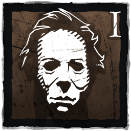

| La forma | |
|---|---|
| Nombre | Michael Myers |
| Apodo | Hombre del saco ó Acechador |
| Genero | Masculino |
| Poder | Mal Interior |
| Arma | Cuchillo de Cocina |
| velocidad de movimiento(ML l) | 105%|4.2m/s |
| velocidad de movimiento(MI ll & lll) | 115%|4.6m/s |
La Forma es un Asesino inquietante que se dedica a acechar a los supervivientes a cierta distancia para alimentar su poder, Mal interior. Cuanto más tiempo está al acecho, más fuerte y rápido se vuelve.
Sus Habilidades personales, Lo mejor para el final , Jugar con la Comida
, Jugar con la Comida y Luz que agoniza le confieren la capacidad de elegir como obsesión a un superviviente y desencadenar efectos letales a partir de ella
y Luz que agoniza le confieren la capacidad de elegir como obsesión a un superviviente y desencadenar efectos letales a partir de ella
Sus Habilidades se centran en las Obsesiones, ya que Michael Myers está obsesionado con asesinar, el Asesino elige un Superviviente y lo etiqueta como su Obsesión. Rango de dificultad:
Su habilidad especial se llama "Evil Within" , un indicador de 3 niveles que afecta la capacidad de la Forma para cazar de manera diferente en cada fase respectiva.
The Shape puede acechar a los supervivientes, lo que llena su actual fase Evil Within. The Shape obtiene un beneficio puro al subir las etapas de Evil Within, con la excepción de su radio de terror, que aumenta con cada etapa.Cualquier superviviente que esté siendo acosado se resaltará de forma brillante y se puede acechar a más de un superviviente a la vez.
Los supervivientes que se esconden entre el follaje (maíz, hierba, arbustos, etc.) o que están rompiendo la línea de visión retrasarán o impedirán que The Shape gane puntos al acecharlos. 